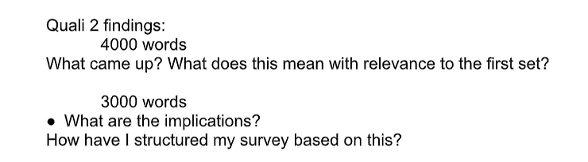
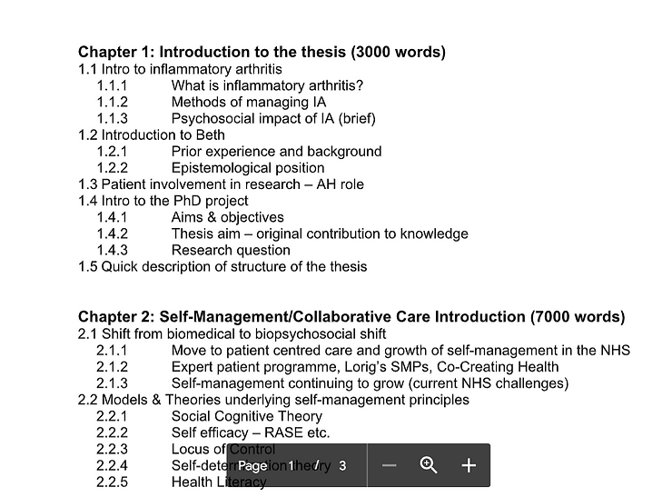
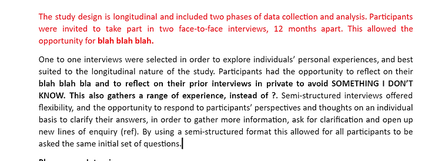
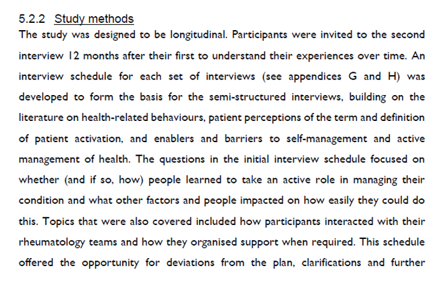

I first wrote this blog draft back in 2022, and it has been edited and resurrected for this version of my site. If you’ve been a reader for a while this means you’ve likely read this before. I hope it’s just as useful this time around!
I’m going to open this post by telling you that there are literally hundreds of people who know more about this than I do. I’m also going to tell you that there are posts that will be more detailed and comprehensive and expert than mine, and I’ll link to some of them at the bottom. With that in mind, I’ve decided to write this anyway. I know plenty of PhD students who are in the early stages of their PhD and are feeling at a bit of a loss about how to actually get started writing their thesis. There is amazing work there about writing tiny texts and weaving red threads of narrative through your thesis. Where I come in is the process of getting started, and getting something down on paper.
Blank documents are scary. I wrote my thesis in Microsoft Word (I sometimes use other programmes like Scrivener or LaTeX, but it suited my supervisors and my work computer better). To get around the fear of the blank page, I created a fresh document for every chapter so I wasn’t overwhelmed by all of the blankness, and put the title for each chapter along with a few sentences of what the chapter may cover. For example, for methods this was:
“Here is my methods chapter and I’ll talk about my study design and why I chose it, my ethics approvals, my recruitment and any other stuff.”
As you’ll see, it’s pretty colloquial and not the “grown-up” language of academia, but it got me started and gave me a road map for everything else.

Creating an outline was a required part of my progression process, and for me it was a really useful tool to get a sense of what I might write. Colleagues shared examples of their theses with me so I could understand some potential structures for literature reviews, or what sections were expected at my institution. I then decided what sub-sections may be useful in my own chapter - with variations in levels of detail depending on how much I had done so far. For example, this is a Winter 2017 document (I started my PhD in October 2016). I had started thinking about how I might introduce the project into Inflammatory Arthritis (IA), and what models I may need to introduce the reader to. As I had time to get to grips with some of the literature, this was fairly detailed and I had a sense of how many words these sections might be.

However, there are sections I did not know much about yet. For example, my findings and discussion chapter for the second stage of my qualitative study. As you can see, it’s still pretty vague. I knew that the maximum thesis word count for my institution was 80,000 words and mine hovers at about 70,000 words. This helped me figure out loosely how many words would be dedicated to each chapter and gave me a goal for each one. Most of my chapter sizes ended up pretty close, with quantitative results taking fewer than I’d expected and my discussion running long to balance it out.
I shared this with my supervisors, to check that there was nothing in there that they didn’t expect and to be sure I hadn’t missed anything glaring. From there, each chapter document got filled with the level of detail I had. I set myself the goal of writing 250 thesis words every working day from my second year onwards (I guesstimated I’d work 200ish days a year, and so calculated that 250 x 200 = 50,000 words a year which would get me there by the middle of my third year.)
Yes, but how to actually start writing?
I am always caught up in the “perfect sentence vortex” (if this feels familiar, read here). I know if I can see the writing it is far easier to get sucked into playing with it, or thinking its rubbish as I go. I wrote huge portions of my thesis using dictation settings on Microsoft Word, and still use it as a way to get the scrappy first draft done. It means I can close my eyes, or take my glasses off or look away and just talk to the screen. My first draft is typically not very academic in the language, and gives me something to work with. It is also easier if you don’t know the “right” sentence but just need something to exist. As an example, here is the first draft of my methods chapter: 
This dictated version was then edited at my leisure over time. This then became… 
Sharing first drafts with anyone (especially supervisors) can feel exposing and tricky, and it is too easy to compare your first draft with someone else’s finished draft. I’m hoping by sharing mine it will help to normalise the idea of your first draft being a bit scrappy and with gaps in, sometimes not knowing what it is you are trying to say.
These are my tips for mapping out my thesis out of fear of actually getting started, and then getting going. Everyone will be different, but what are yours?
Amazing resources for technical detail on thesis writing:
Pat Thomson’s approach to the first draft
Pat Thomson’s 12 step process for a first draft
Thesis Whisperer’s “Your thesis is the map, not the journey”